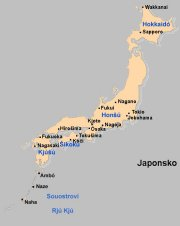
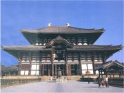
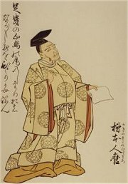
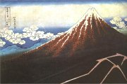
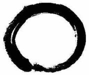
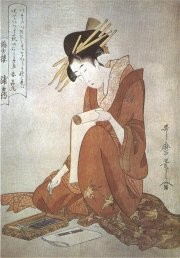
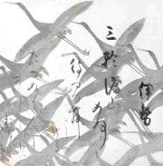
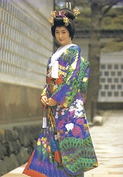

Mapa Japonska
|
JAPONSKO

Japonské umění je pověstné přejemnělou technikou s velkým smyslem pro detail a přehnanou pečlivostí. Samotné Japonce proslavila ve světě jejich slušnost a přičinlivost. Dějiny Japonska ale ukazují i horší stránky. Tradice odvážných samurajů a bojových umění jakoby ztratila v moderní době své duchovní zázemí a obrana se změnila v agresi. Touha ovládnout blízkou Čínu, Koreu a celé Tichomoří přivedla Japonce ke spolupráci s Německem v době 2. světové války. Japonci si v ní počínali velmi krutě a odhodlaně, což vedlo k velmi smutnému konci – shození atomových bomb na Hirošimu a Nagasaki. Naštěstí už má Japonsko tuto etapu dějin za sebou a dnes je moderní demokratickou zemí, která pečuje o své nejlepší kulturní tradice.
|
Historie
První stát na území Japonska vznikl ve 4. stol. n.l. Významnými obdobími byla Heian (794-1192), Kamura (1192-1333), Muromači (1336-1573) a Tokugawa (1603-1867) neboli Edo. Formálně byl v čele státu císař, ale ve skutečnosti vládl šógun (vrchní velitel vojsk). Tento šógunát trval od roku 1192 do roku 1867. Vystřídalo ho období reforem Meidži (1867-1912). Japonsko bylo dlouho uzavřeno před kolonisty z Evropy, ale v 19. století se muselo zříci izolace. Ve 2. světové válce se postavilo na stranu Německa.
|
Sbírka deseti tisíc listů

Kakinomoto no Hitomaro
(662-710)
|
Manjóšú (760 n.l.)
Nejstarší japonská básnická antologie Manjóšú (Sbírka deseti tisíc listů) zahrnuje tvorbu básníků ze 4. až 8. stol. n.l. Kniha obsahuje 4516 básní od čtyř set různých autorů. Nejvýznamnějším z nich byl Kakinomoto no Hitomaro (662-710). O jeho životě vlastně nic nevíme. Zřejmě pocházel z rodiny pěvců rituálních písní a stal se dvorním básníkem, který musel skládat oslavné ódy na členy císařské rodiny a žalozpěvy u příležitosti jejich úmrtí. Tyto básně samozřejmě nejsou tak procítěné jako jeho volná tvorba.
Jaký pocit chtěl autor básně vzbudit ve čtenáři?
|
Šintoismus
Původním náboženstvím Japonců byl šintoismus (šintó znamená cesta bohů). Toto náboženství bylo založeno na uctívání božských sil kami (mohlo jít o osoby, předměty i určitá místa). Japonský císař byl považován za potomka bohyně slunce Amaterasu. Po příchodu buddhismu do Japonska došlo k promísení jednotlivých božstev.

Autorem dřevořezu Fudži za bouře je Kacušika Hokusai (1760–1849). Tato posvátná sopka se stala symbolem Japonska.
|
Zenové školy
Prvními zenovými mistry v Japonsku byli Eisaj (1141-1215), zakladatel školy rinzaj, a Dógen (1200-1253), zakladatel školy zazen. Zen-buddhismus zaujal hlavně japonské válečníky – samuraje a dotkl se řady oblastí. Čerpá z něj čajový obřad, tušová malba, lukostřelba, šerm kendo, bojové umění džudžitsu… Zenové zahrady tvoří pouze kameny a uhrabaný písek.

Zenový kruh
Co si myslíš o zen-buddhismu?
Jak se ti líbí zenové příběhy?
Vymysli nový kóan.
|
Zen-buddhismus
Cílem zenového buddhismu (zen-buddhismu) je dosažení satori (duchovního osvícení), cestou je meditace nad kóany, což je systém padesáti paradoxních výroků, které mají otřást zaběhanou myslí žáka.
Jak zní tlesknutí jedné ruky?
Má pes přirozenost Buddhy? Wu!
Jaká byla tvoje původní tvář v době, než jsi se narodil?
|
Tento výcvik trvá asi 30 let, přičemž učitel žákovi spíše klade překážky, než aby mu pomáhal. Mistři se vyhýbají teoretizování, protože chtějí dosáhnout u žáka osvícení přímým náhledem, nejlépe nějakým iracionálním činem. Například místo odpovědi žáka udeří.
|
Mnich se ptal Čao-čoua: „Proč přišel ze Západu První patriarcha?"
Čao-čou odpověděl: „Cypřiš na dvoře."
|
Buddhistické vyvarování se tužeb, neusilování a vyvanutí je zde dovedeno do naprosté krajnosti.
|
Mladý žák zenu Jamaoka Teššú, navštěvoval jednoho mistra po druhém a naplňovalo ho pýchou, když mohl demonstrovat své duchovní vědomosti. Nakonec hovořil před zenovým mistrem Dokuonem ze Šokoku, který právě seděl v zahradě a kouřil dýmku.
Jamaoka řekl: „Duch, Buddha a živí tvorové nakonec neexistují. Pravá přirozenost jevů je prázdnota. Není žádné uskutečnění, žádné mámení, žádná moudrost, žádná prostřednost. Není žádné dávání ani nic, co se přijímá." Dokuon, který tiše pokuřoval, neříkal nic. Najednou uhodil svou bambusovou dýmkou Jamaoku do hlavy. To mladého muže náramně rozhněvalo. „Jestliže nic neexistuje," tázal se Dokuon jemně, „kde se tu vzal ten hněv?"
|
|
Čínský čchan
Buddhismus začal pronikat do Japonska z Koreje v 6. stol. n.l. Velkého vlivu zde dosáhla původně čínská meditační škola čchan (japonsky zen), která spojovala tradice buddhismu a taoismu. Za zakladatele buddhistické školy čchan je považován indický misionář Bódhidharma, který přišel do Číny v roce 520 n.l. Setkal se s císařem, který mu líčil, jak podporuje buddhismus, ale Mistr mu odpověděl, že tím nedosáhl žádných zásluh a že první zásadou buddhismu je nekonečná prázdnota. Potom odešel do kláštera, kde 9 let meditoval, zíraje na prázdnou stěnu. Tato meditace v sedě (sanskrtsky dhjána, čínsky co-čchan, japonsky zazen) dala název celé buddhistické škole. Bódhidharma předal své učení mnichům slavného kláštera Šao-lin, kteří v 8. stol. sepsali Tribunovou sútru šestého patriarchy. Je to jediná sútra napsaná v Číně. Hlavní postavou je patriarcha Chuej-neng.
|
Japonský básník Džinšičiró Macuo se proslavil pod jménem Bašó (Banánovník). Tento syn samuraje se přihlásil k zenovému buddhismu. Toulal se krajinou nebo pobýval v poustevně, před kterou si zasadil banánovník. Jeho dílo obnáší přibližně 1000 haiku.
Úplněk stoupá
nad krajem. Jako čerstvě
přeříznutý kmen.
Za trnkou v květu
jdu po vůni. Za rohem
vrazím do kůlny.
|
Haiku
Haiku je básnická forma, která se vyznačuje přesným počtem slabik (celkem 17) rozdělených do tří veršů o 5, 7 a 5 slabikách. Tato forma je natolik krátká, že v ní lze představu nanejvýš načrtnout. Svou vytříbeností si ale vydobyla velkou oblibu a nahradila starší tanku i renku. Tanka byla bohatě zastoupena ve sbírce Manjóšú, tvoří ji 31 slabik (5 veršů o 5, 7, 5, 7 a 7 slabikách). Renku byla tzv. řazená báseň (haikai no renga) a šlo vlastně o kolektivní hru, kterou se bavila japonská společnost. Lidé se sešli a střídavě psali jednu tanku za druhou. První napsal tři verše, další dva a opět dokola tři verše a dva verše. Pravidla hry přesně určovala, která slova musí daná sloka obsahovat, které náměty jsou vhodné atd. První tři verše psal vždy nějaký uznávaný básník, díky čemuž se časem osamostatnily a vytvořily haiku. Prvním tvůrcem haiku byl Bašó.
|
Haiku
Na uschlou větev
podzimního večera
usedla vrána.
Co se má křičet
mezi kopcem a lodí
v té husté mlze?
Ale, spadlý květ
se vrátil zpět na větev!
Byl to snad motýl?
Pokus se napsat haiku.
Vytvořte řazenou báseň.
|

Kigatawa Utamaro (1754-1806): Žena píšící na svitek, ukijoe
|
Jazyk a písmo
Japonštinu nelze zařadit do žádné jazykové rodiny. Díky kulturním kontaktům s Čínou převzala řadu výrazů z čínštiny. Japonci rovněž převzali v 5. stol. n.l. čínské písmo. Tvar i význam jednotlivých znaků zůstal zachován, ale výslovnost byla samozřejmě jiná. Na konci 1. tisíciletí z nich vytvořili dvě slabičná písma. Katakana slouží k zapisování převzatých slov a hiragana v ostatních případech. Stejně jako v Číně se i zde rozvíjí kaligrafie.
Další díla
Kodžiki (Zápisy o dávných věcech)
Nihonšoki (Japonské letopisy)
Murasaki Šibuku: Vyprávění o Gendžim (román)
Kenkó: Psáno z dlouhé chvíle
|
Japonská kaligrafie

Vysvětli význam slov bonsaj, ikebana, origami a samuraj.
Která další slova přejatá z japonštiny znáš?
|
Internetové stránky
Umění Japonska
Česko-japonská společnost
The virtual museum of japanese arts
Ukijoe, japonské dřevořezy
Ukijoe, japonské dřevořezy
Japonsko, informace, fotografie...
Tipy
Miyabi, japonská suši restaurace
Brody, nakladatelství zaměřené na čínskou a japonskou literaturu
Filmy
Rošomon, Sedm samurajů, Sny Akiry Kurosavy, režie A.Kurosawa
|
Doporučená četba
Aitken, Robert: Vlna zenu, Bašó, Haiku a zen, přel. J.Zavadil, Pragma, Praha 2004
Bašó: Měsíce, květy, přel. Novák, Vladislav, Mladá fronta, Praha 1996
Bašó: Úzká stezka do vnitrozemí, přel. A.Líman, DharmaGaia, Praha 2000
Cleary, Thomas: Zenová hůl, Anekdoty a příběhy mistrů zenu, přel. Z.Krulichová, Votobia, Praha 1928
Collcutt a kol.: Svět Japonska, přel. R.Duroňová, Knižní klub, Praha 1997
Hloucha, J.: Mezi bohy a démony, Praha 1928
Kodžiky – japonské mýty, přel. V.Krupa, Bratislava 1979
Manjóšú, Deset tisíc listů ze starého Japonska, přel. A.V.Líman, Brody, Praha 2001
Novák, M.: Japonská literatura do roku 1868, Praha 1977
Pár much a já, Malý výběr z japonských haiku, přel. A.V.Líman, DharmaGaia, Praha 1996
Příběhy o soudci Ookovi, japonské pohádky vypravuje V.Hrdličková, Albatros, Praha 1984
Verše psané na vodu, přel. B.Mathesius, Albatros, Praha 1973
Watts, A.W.: Cesta zenu, přel. P.Jochmann, Votobia, Olomouc 1995
|
Připrav si referát o některé z uvedených knih nebo internetových stránek.

Japonské kimono
|
|